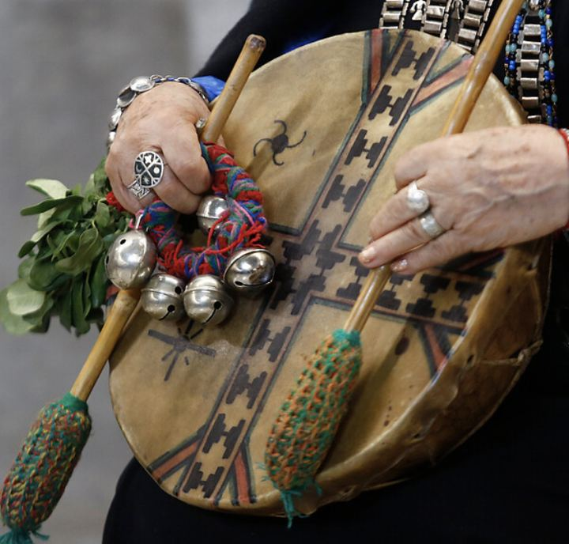
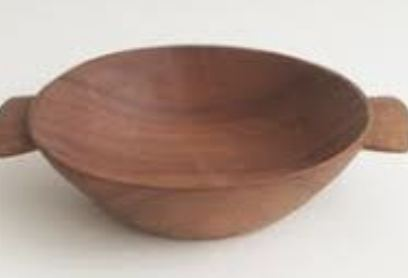
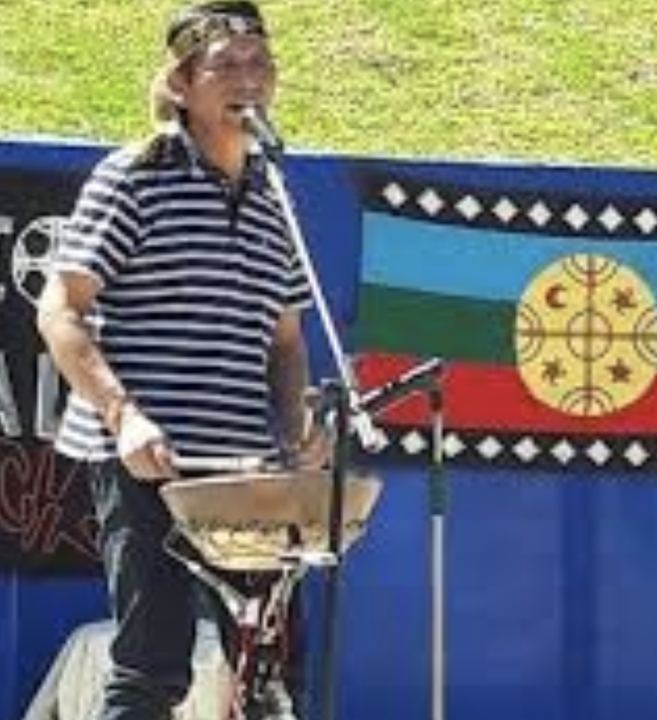

Guía 1: chalin ka üySaludar y presentarse. Kimeltun 1 y 2.
Esta guía acompaña tu trabajo personal de cada semana. Léela en voz alta: el mapuzugun se aprende hablando. Todo está escrito en grafemario Azümchefe.
I. Chumgechi wirintukugekeyTres grafemarios, una misma lengua
| Azümchefe | Unificado | Ragileo | Ejemplos |
|---|---|---|---|
| ü | ü | v | kümelkalen, txipantü |
| g | ng | g | lamgen, gen |
| tx | tr | x | txipantü, txewa, txawün |
| z | d | z | zugun, mapuzugun |
| ll | ll | j | aylla, allkütun |
| q | g | q | reqle (siete) |
Kiñeke aukiñ: cuatro sonidos para practicar

ülkantun canto
lamgen hermana o hermano
txayenko cascada

rali plato
La pronunciación cambia según el territorio, y todas las formas son válidas: en algunos lugares z suena d (mapuzugun, mapudugun) y f suena b (feley, beley).
II. ChalinEl saludo cambia según la persona (che)
Mari mari es el saludo mapuche. Mari es «diez»: al decir mari mari nos damos las dos manos, diez y diez. Se usa en la mañana, la tarde o la noche (José Paillal).

¿A quién saludas?
Mari mari kom pu che
A todo el grupo. Hola a todas las personas.
| Saludo | Relación |
|---|---|
| Mari mari kom pu che | A todo el grupo |
| Mari mari peñi | Entre hombres |
| Mari mari lamgen | Entre mujeres, o entre mujer y hombre |
| Mari mari ñaña | Hacia una mujer cercana |
| Mari mari chacha | Hacia un hombre cercano |
| Mari mari papay | Hacia una mujer mayor |
| Mari mari chachay | Hacia un hombre mayor |
Estas palabras marcan la relación entre quienes hablan. Conversa en tu familia o comunidad cómo las usan.
Actividad: elige el saludo
Llegas al taller y saludas a todas las personas.
Saludas a una mujer mayor de tu comunidad.
Una mujer saluda a un hombre.
Un hombre saluda a otro hombre.
III. Un chalin básicoLee en voz alta con otra persona y luego cambien de rol
ka: suma, como «y, otro, también». Inche ka = yo también.
kay: variación de ka que suele ir con eimi. ¿Eimi kay? = ¿y tú?
kümelkalen: viene de küme, bueno. Dice que la persona ha estado bien.
IV. Algunas formas de estarEl sufijo -le / -küle
El sufijo -le indica un estado: cómo está o cómo quedó alguien. Si la raíz termina en consonante se agrega kü. Con -la se niega.
| Mapuzugun | Español | Negación |
|---|---|---|
| kümelkalen | estoy bien | kümelkalelan |
| txemolen | estoy bien de salud | txemolelan |
| ürkülen | tengo cansancio | ürkülelan |
| kütxankülen | estoy con enfermedad | kütxankülelan |
| mañumkülen | estoy con gratitud | — |
V. Keyu ke ramtunPreguntas para usar en clase
Úsalas siempre que lo necesites: preguntar también es hablar mapuzugun.
| Mapuzugun | Español |
|---|---|
| Inche nien kiñe ramtun | Tengo una pregunta |
| ¿Chem am ta ___ wigkazugun mew? | ¿Qué significa ___ en español? |
| ¿Chumgechi pigei ___ mapuzugun mew? | ¿Cómo se dice ___ en mapuzugun? |
| ¿Chumgechi am? | ¿Cómo? |
| ¿Kelluafen? | ¿Me puedes ayudar? |
| Feley | De acuerdo, así es |
| Mañum, mañumün, mañumkülen | Gracias, agradecido, estoy agradecido |
Fillke nemül: palabras para hoy
Toca cada tarjeta para ver qué significa.
VI. Presentación personalOcho partes
Tuwün: lugar de procedencia territorial, de dónde viene mi gente. ¿Chew tuwimi? Ojo: tuwün también es el verbo «sujetar».
Küpan: linaje, las familias de las que vengo (por ejemplo, los apellidos de mi madre y de mi padre). Ojo: küpan también es el verbo «venir».
Mülen: estar, vivir. Dónde estoy o vivo hoy. ¿Chew müleimi?
La forma de nombrar el küpan varía entre hablantes: pregunta en tu familia o comunidad cómo se dice. En algunos lugares se menciona directamente a las personas mayores de la familia.
Arma tu presentación
| Parte | Mapuzugun | Español |
|---|---|---|
| 1. Chalin | Mari mari kom pu che. | Hola a todas las personas. |
| 2. Nombre | Inche ______ pigen. | Me llamo ______. |
| 3. Edad | Inche ______ txipantü nien. | Tengo ______ años. |
| 4. Tuwün | Tañi tuwün ______ mapu/waria mew. | Vengo de ______. |
| 5. Küpan | Tañi küpan ______. | Mi linaje es ______. |
| 6. Mülen | Fachantü ______ mew mülen. | Hoy vivo en ______. |
| 7. Estado | Fachantü kümelkalen. | Hoy estoy bien. |
| 8. Cierre | Fey mütem. Mañum. | Eso no más. Gracias. |
Rakin, para decir tu edad: 1 kiñe, 2 epu, 3 küla, 4 meli, 5 kechu, 6 kayu, 7 reqle, 8 pura, 9 aylla, 10 mari. Las decenas se forman multiplicando: 20 epu mari, 30 küla mari. Luego se suma la unidad: 37 küla mari reqle. 100 es pataka.
VII. EjerciciosEscribe y presiona «Revisar». Si fallas, vuelve a intentar antes de ver las respuestas.
1. Une cada pregunta con su respuesta
- ¿Inei pigeimi?
- ¿Chumleimi?
- ¿Chew tuwimi?
- ¿Chew müleimi?
- ¿Chumten txipantü nieimi?
2. Completa el chalin
A: Mari mari . B: Mari mari lamgen. ¿?
A: Kümelkalen. ¿Eimi ? B: Inche kümelkalen.
A: Feley. lamgen.
3. Traduce al mapuzugun
- Me llamo Ayelen.
- Estoy cansado.
- ¿Y tú?
- Mi lugar de origen es Temuco, pero vivo en Santiago. (pero = welu)
- Hoy estoy bien de salud.
Puede haber otras formas correctas. Si la tuya es distinta, compárala con la respuesta y pregunta en clase.
4. Escribe tu presentación y léela en voz alta tres veces
Mientras escribes, se marcan las partes que ya incluiste.
- 1. Chalin
- 2. Nombre (pigen)
- 3. Edad (txipantü nien)
- 4. Tuwün
- 5. Küpan
- 6. Mülen
- 7. Estado
- 8. Cierre
Práctica con un hablante
Saluda con mari mari a alguien de tu familia o comunidad que hable mapuzugun y pregúntale ¿chumleimi? Anota cómo responde y si usa otras formas de estar. Pregúntale también cómo se dice tu tuwün.
Solucionario
1) a-2, b-4, c-5, d-1, e-3. 2) lamgen o peñi; chumleimi; kay; ka; pewkayal. 3) Inche Ayelen pigen. Ürkülen. ¿Eimi kay? Tañi tuwün Temuko mapu (o waria) mew, welu Santiago mew mülen. Fachantü txemolen.